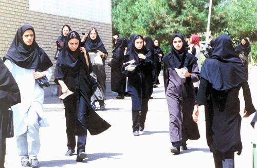

پذيرش > اخبار > هفته سوم مرداد ماه:ورود خانم ها به دانشگاه ممنوع / نوید محبی


 هفته سوم مرداد ماه:ورود خانم ها به دانشگاه ممنوع / نوید محبی هفته سوم مرداد ماه:ورود خانم ها به دانشگاه ممنوع / نوید محبی
22 مرداد 1390 - - نسخه قابل چاپ
تغییر برای برابری:هفته ی سوم از تابستان، هفته ی داغی برای کنکوری ها بود، هفته ای که سرنوشت تعداد زیادی از دختران و پسران جوان ایرانی برای چند سال آینده و شاید برای تمام عمر رقم می خورد. این بار اما کنکور برای دختران و پسران وعده ها و امیدهای متفاوتی داشت، در حالیکه دختران سهم بالایی از رتبه های برتر کنکور را به خود اختصاص داده بودند، درهای دانشگاهها را به ویژه در رشته های پرطرفدار فنی و پزشکی به روی خود نیمه بسته دیدند، گویی حذف زنان از دانشگاه به عنوان راه حل از سوی دولت برای کم اثرتر کردن معضلات بیکاری و اجتماعی در نظر گرفته شده است. روزهای داغ تابستان نود برای دختران کنکوری داغ تر از همیشه می گذرد.خبر صدور حکم اعدام در ملاء عام برای متهمان ماجرای خمینی شهر، دستگیری مادر کوهیار گودرزی فعال حقوق بشر،خط و نشان های مسئولین برای زنان بدحجاب و طرح انتقال تابعیت از مادر به فرزند از دیگر خبرهای هفته ی سوم مرداد است.
مخالفت دولت با تفکیک جنسیتی تنها مخالفتی لفظی است
طرح دانشگاه های تک جنسیتی و تفکيک جنسيتی در دانشگاه ها و رشته های درسی در حالی توسط وزارت علوم دنبال می شود که تيرماه امسال محمود احمدینژاد، رئيس دولت دهم طی نامهای تفکيک جنسيتی در برخی رشتهها و دانشگاهها را «اقدامی سطحی و غيرعالمانه» ناميد و خواهان «توقف فوری» آن شده بود، کامران دانشجو وزیر علوم هم گرچه درباره ی طرح دانشگاه های تک جنسیتی گفته بود که" این طرح در راستای اسلامی شدن دانشگاههاست و آنچه مد نظر ماست بحث دانشکاه تک جنسیتی است ولی هدف تفکیک جنسیتی نیست" اما مخالفان این طرح معتقدند که اسلامی کردن دانشگاه ها آن هم با قرائتی که دولت آن را دنبال می کند در نهایت منجر به تفکیک جنسیتی و جداسازی دختران و پسران دانشجو می شود.همچنین منتقدان این طرح بر این باورند که مسئولین دولت علی رغم مخالفت لفظی و ظاهری در عمل آن را با پوشش "اسلامی کردن دانشگاه ها" باجدیت دنبال می کنند.کما اینکه غلامعلی نادری مدير کل آموزشهای آزاد وزارت علوم در گفت و گو با ایسنا خبر از مجوز قطعی برای ۳ دانشگاه غیرانتفاعی تکجنسیتی در قم (موسسه تکجنسیتی پسرانه با عنوان طلوع مهر)، البرز (موسسه تکجنسیتی دخترانه با عنوان رسام) و شهر مشهد (موسسه تکجنسیتی دخترانه با عنوان فردوسی مشهد)داده و همچنین گفته که :"سال گذشته به ۲ موسسه غیرانتفاعی تکجنسیتی دخترانه ابرار و رفاه در تهران مجوز پذیرش دانشجو داده شد و درخواستهای ديگری در زمينه ايجاد موسسات تک جنسيتی به وزارت علوم ارائه شده است که در دست بررسی است."
به بیان ساده تر وقتی مسئولین دولتی می گویند با تفکیک جنسیتی مخالفیم یعنی موافق جداسازی دختران و پسران در کلاس های درس نیستیم اما حامی طرح دانشگاه تک جنسیتی هستند که در نهایت به همان جداسازی دختران و پسران دانشجو ختم خواهد شد.بسیاری از صاحب نظران معتقدند خط کشی و دور سازی انسان ها از یکدیگر امکان ارتباطات اجتماعی دو جنس مخالف با یکدیگر را دچار مشکل کرده و باعث بروز رفتارهای نابهنجار خواهد شد که می تواند پیامدهای بد اجتماعی را به همراه داشته باشد.
موفقیت چشمگیر دختران در کنکور و سیاست کنترلی حاکمیت
کنکور سال 90 همراه با موفقیت چشمگیر دختران دانشجو بوده است. آمارها نشان می دهد ٦٨درصد داوطلبان مجاز به انتخاب رشته را دختران و ٣٢ درصد را پسران تشکیل میدهند و همچنین نفر اول گروه ریاضی،3 نفر برتر گروه هنر،سه نفر در میان 5 نفر برتر گروه علوم تجربی سهم نفرات برتر دختران دانشجو در کنکور سال 90 بوده است اما از طرفی دیگر گویا برتری حضور دختران نسبت به پسران در دانشگاه ها با مذاق حاکمیت سازگار نیست و طرح های کنترلی نظیر سهمیه بندی دروس،پذیرش تک جنسیتی،بومی گزینی دانشگاه ها،از جمله راه کارهای حاکمیت برای مقابله با حضور گسترده زنان در دانشگاه هاست.در همین رابطه دانشجو نیوز گزارش داده که :"نتایج اولیه آزمون سراسری سال ٩٠ در حالی اعلام شده است که دفترچه انتخاب رشته داوطلبان کنکور سراسری حکایتگر اعمال سیاست های تبعیض جنسیتی به صورت گسترده و سازمان یافته در نحوه پذیرش داوطلبان دختر است و در نزدیک به ٤٠ دانشگاه کشور در برخی از رشته ها پذیرش داوطلبان به صوت تک جنسیتی صورت گفته است".علاوه بر این بومی گزینی هم به سیاق سال های قبل در کنکور امسال اعمال شده است.در همین رابطه امیرحسین که در کنکور سال 89 موفق به کسب رتبه ای در رده ی 70 شده است به تغییر برای برابری می گوید:ماه ها تلاش کردم تا موفق به کسب این رتبه شدم تا بتوانم در دانشگاه های برتر در تهران تحصیل کنم اما با بومی گزینی بیش از 90 درصدی که در رشته ی علوم انسانی اعمال شد از تحصیل در دانشگاه های برتر کشور محروم ماندم و مجبور شدم در استان محل زندگی ام به دانشگاه بروم.
نارضایتی مسئولین از سرپیچی زنان در پوشیدن حجاب تا چادر زورکی
در حالیکه نیمی از فصل گرما در ایران سپری شده است اما همچنان موضوع حجاب و عفاف در صدر خبرها قرار دارد. طرح "جامع گسترش فرهنگ حجاب و عفاف" از برخورد نیروی انتظامی با افراد "بدحجاب" گرفته تا تلاش برای "بالا بردن فرهنگ عفاف" توسط سازمانها و وزارتخانههای مختلف را در بر میگیرد.به نظر می رسد اجرای این طرح ها نتایج مطلوبی به همراه نداشته است و شخصیت های سیاسی حاکمیت چندان از اجرای طرح راضی نیستند،به همین خاطر هست که اخیرا لحن مسئولین با گذشته تفاوت کرده و لحنی تهدید آمیز به خود گرفته است.در همین رابطه رئيس پليس امنيت عمومي خراسان رضوي گفت: از اين پس تذکري به افراد بدحجاب داده نخواهد شد و بدحجاب ها دستگير و به مراجع قضايي معرفي مي شوند و حداد عادل رئیس کمیسون فرهنگی مجلس هم ضمن نگرانی و تهدیدآمیز بودن وضعیت حجاب در جامعه گفته که :" حجاب موضوع ظريف و پيچيدهاي است و در جنگ نرمي که دشمن عليه کشورمان آغاز کرده است، حجاب و عفاف جبههاي مهم است؛ به همين جهت نهادهاي مختلف براي رسيدگي به وضعيت حجاب در تلاش هستند و ماه گذشته 26 دستگاه مسئول در زمينه گسترش حجاب و عفاف به مجلس دعوت شده بودند".
جعفرشجونی عضو تشکل اصولگرای جامعه روحانیت مبارز هم که گویا از وضعیت بدحجابی!بسیار عصبانی است در اظهارنظری جالب به احمدی نژاد توصیه کرده که "زورکی باید بر سر زن ها چادر گذاشت" و ادامه می دهد:" دختری که با لباس خواب! در خیابان آمده، دارد جامعه ما را آتش میزند. او جوانهای عزب ما را آتش میزند و تحریک میکند. جوان هم که نمیتوانند ارضا شود دیوانه میشود و یک کارد برمیدارد".
تجاوزجنسی ؛ قربانی مقصر است یا متجاوز؟
مساله ی تجاوزهای اخیری که در ایران اتفاق افتاد و جنجال زیادی هم به پا کرد با صدور حکم اعدام برای 4 تن از متجاوزین وازد مرحله ی جدیدی شده است. دادگاه این افراد را که در خمینی شهر اصفهان در باغی در اطراف شهر به زنان تجاوز کرده بودند را به اعدام در ملاء عام محکوم کرد.مسئولین و شخصیت های حکومتی در اظهارنظرهای خود، هرکدام سعی کردند مهمترین علت این تجاوزها و قتلها را بیحجابی یا بدحجابی زنان و دختران معرفی کنند.در همین رابطه شجاع ذوقی دادستان انقلاب استان البرز ادعا کرد که:" استخدام کارمندان زن یکی از زمینههای «تجاوز» و «آدمربایی» در جامعه ایران است.همینطور هفته گذشته غلامرضا جمشیدیها رئیس دانشکده علوم اجتماعی دانشگاه تهران٬ زنان و دختران «اغفالگر، اغواگر و لجوج» را زمینهساز جرایم باغ خمینیشهر، سعادتآباد و حادثه پل مدیریت معرفی کرده بود.همچنین درپی تجاوز گروهی به زنان در خمینی شهر اصفهان موسی سالمی، امام جمعه این شهر، گفته بود که اگر خانمها حجاب داشتند، مورد تجاوز قرار نمیگرفتند.در همین زمینه یکی از فعالین حقوق زنان در ایران در گفتگویی با سایت تغییر برای برابری این نوع اظهارنظرهای شخصیت های دولتی را ناشی از ناتوانی حل ریشه ای معضلات اجتماعی از سوی حاکمیت می داند و می گوید:حاکمیت با فرافکنی و سلب مسئولیت از خود ضمن همراهی با متجاوزین و محکوم کردن قربانی درصدد است به نوعی حجاب اجباری و برخوردهای پلیسی امنیتی خود در این زمینه را توجیه کند.
با زنان در زندان ها
در اخبار این هفته ی زنان در زندان ها شاهد کشیده شدن دامنه ی آزار اذیت ها به خانواده ی زندانیان سیاسی بودیم. خانواده ی نسرین ستوده وکیل دادگستری و فعال حقوق زنان و بشر که قصد ملاقات کابینی با او را داشتند با برخورد زننده ی مامورین زندان مواجه شدند به طوری که باعث بازداشت 5 ساعته ی خانواده ستوده و ضرب و شتم خواهر نسیرین ستوده که استاد دانشگاه است شد. به گفته ی رضا خندان همسر نسرین ستوده مامورین چند جای صورت و دست های خانم ستوده را زخمی کردند و جای ناخن های مامور بر صورت خواهر خانم ستوده برجای ماند.
در خبر دیگر اما پروین مخترع مادر کوهیار گودرزی فعال حقوق بشر نیز بازداشت شد که هم اکنون در زندان کرمان در وضعیت بسیار نامناسبی به سر می برد. همچنین فرید منصوریان فعال محیط زیست و از دستگیرشدگان بهمن 1388 طی نامه ای برای “اجرای حکم” به زندان اوین فراخوانده شد. بنا به گزارش رسانه ها، در دادگاهی که شهریور سال گذشته به ریاست مقیسه تشکیل گردید این فعال محیط زیست به سه سال حبس تعزیری محکوم گردید.
مریم بیدگلی، از فعالان کمپین یک میلیون امضاء در شهر قم که روز 30 تیرماه برای اجرای حکم در منزلش در قم بازداشت شد، برای شرکت در مراسم ترحیم پدرش که به دلیل ابتلا به سرطان درگذشته است به طور موقت از زندان لنگرود شهر قم آزاد شد.
ناصر تقوایی کارگردان نامدار ایرانی که همسرش مرضیه وفامهر از زنان سینماگر ایران در زندان قرچک در وضعیت بسیار نامناسبی به سر می برد گفته که قاضی پرونده مرضیه وفامهر بر خلاف قول دادستان عمل کرد و وی را همچنان در زندان نگه داشته اند. او در گفتگو با کمپین بین المللی حقوق بشر در ایران از سازمان ملل درخواست کرد که "گزارشگر ویژه خود را زودتر به ایران بفرستد تا وضعیت زندانیان را از نزدیک ببیند و به نوعی از آنها دفاع کند. "
تصمیم برای اصلاح قانون انتقال تابعیت زنان ایرانی به فرزندانشان
قانون "تابعیت" در ایران از جمله موارد مورد اعتراضی فعالین جنبش زنان و به ویژه کمپین یک میلیون امضا بوده است.در همین زمینه بی بی سی گزارش داده که نمایندگان مجلس قصد دارند قانون انتقال تابعیت زنان ایرانی به فرزندانشان را اصلاح کنند.زهره الهیان نماینده مجلس گفته که بر اساس این طرح فرزندان زن ایرانی که با مردان خارجی ازدواج می کند، ایرانی محسوب می شوند و از حقوق دیگر ایرانیان هم برخوردارند و شرطش آن است که پدر و مادر ازدواج شان را ثبت کرده باشند.
خبرها با زنان در دور دنیا
قرار است شنبه اولين نخست وزير زن تايلند در برابر پادشاه اين كشور حضور يابد و پس از اجراي مراسم سوگند،به طور رسمي نخست وزيري وي آغاز شود.
شبكه تلويزيوني يورو نيوز گزارش داد: نمايندگان پارلمان تايلند روزجمعه ينگلوك شيناواترا 44 ساله را كه خواهر "تاكسين شيناواترا " نخست وزير اسبق اين كشور بوده را به عنوان نخست وزير انتخاب كردند.
به گزارش شهرزادنیوز آنیس هیدایا از اندونزی و مسئول سازمانی که در دفاع از حقوق کارگران مهاجر اندونزیایی در کشورهای دیگر حمایت می کند؛ برنده جایزه دیده بان حقوق بشر شد. "جاکارتا گلوب" با درج این خبر افزوده است که این جایزه به فعالینی اهدا می شود که فعالیت های خارق العاده ای انجام داده باشند.همچنین یونیسف ضمن هشدار در رابطه با تعداد عروسان زیر 18 سال در دنیا خبر داده که :" آمار دختران زیر 18 سالی که (به اجبار) ازدواج می کنند، 10 میلیون نفر است. به عبارت دیگر در هر 3 ثانیه یک دختر زیر 18 سال وارد زندگی زناشویی می شود که در بسیاری موارد با فقر و خشونت همراه است.بیشترین تعداد عروسان زیر 18 سال در خاورمیانه، آفریقا و جنوب آسیا هستند و معمولا از خانواده های فقیرند.علاو بر فقر و خشونت فیزیکی، عروسان زیر 18 سال دوران بارداری و زایمان خطرناک تری نسبت به افراد بالای 20 سال دارند. احتمال مرگ در دوران بارداری و یا زایمان برای این گروه سنی 15 برابر سنین بالاتر است.
ارسال به
بالاترین
،
توییتر
،
فریندفید
،
فیسبوک
در همين بخش :
 پروین ذبیحی برنده جایزه حقوق بشری سازمان غيردولتى اتريشى سودويند شد پروین ذبیحی برنده جایزه حقوق بشری سازمان غيردولتى اتريشى سودويند شد
پخش کارت پستال و بروشور در روز جهانی زن در تهران
تمدید زمان برای امضای بیانیهی جمعی از فعالان زن به مناسبت هشت مارس
مجوزی که در نطفه خفه شد
بیش از 2000 امضا در اعتراض به تبعیض های آموزشی به مجلس تحویل داده شد
ديگر بخش ها :
طرح یک میلیون امضا
|
مقالات
|
سایت نوشته ها
|
اخبار
|
گزارش كمپين
|
گفت و گو
|
علیه سکوت
|
كوچه به كوچه
|
نامه های شما
|
گزارش ویژه
|
گفتگو با اعضا
|
ویژه سالگرد کمپین
|
تصویر برابری
|
دل آرام علی
|
تریبون
|
مقالات
|
تاریخ شفاهی
|
خارج از چارچوب
|
کتابخانه
|
درباره کمپین
|
کمپین در شهرها
|
کمپین در بند
|
صدای تغییر
|
ویژه 22 خرداد
|
لایحه حمایت از خانواده
|
گالری
|
عشا مومنی
|
امیر یعقوبعلی
|
خدیجه مقدم
|
راحله عسگری زاده و نسیم خسروی
|
پروین اردلان،جلوه جواهری، مریم حسین خواه، ناهید کشاورز
|
زینب پیغمبرزاده
|
سعیده امین، سارا ایمانیان، محبوبه حسین زاده، ناهید کشاورز و همایون نامی
|
احترام شادفر
|
نسیم سرابندی زاده،فاطمه دهدشتی
|
وبلاگ مهمان
|
پرونده خرم آباد
|
دستگیری ها
|
مریم مالک
|
پرستو اللهیاری
|
مهرنوش اعتمادی
|
سمیه رشیدی
|
Other Languages
|
همراهان
|
«فراخوان کمپین ده روز با بهاره هدایت»
| English
|